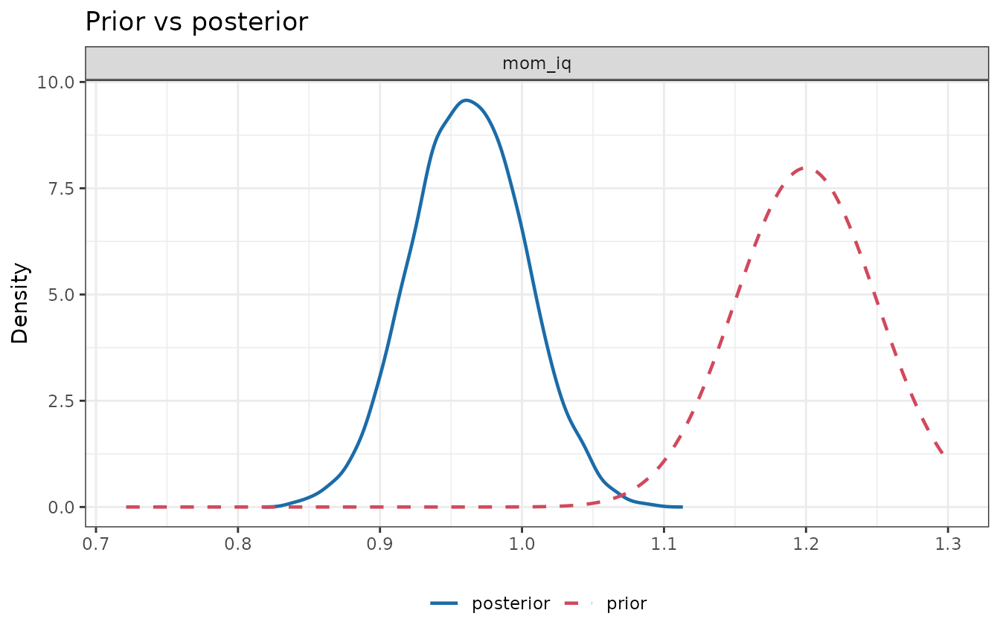
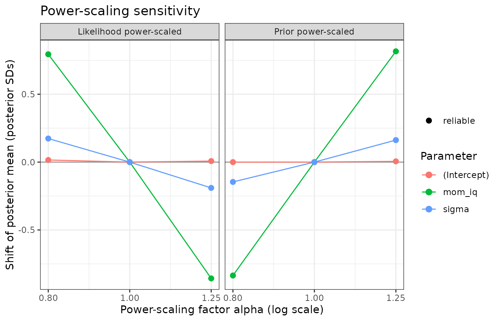
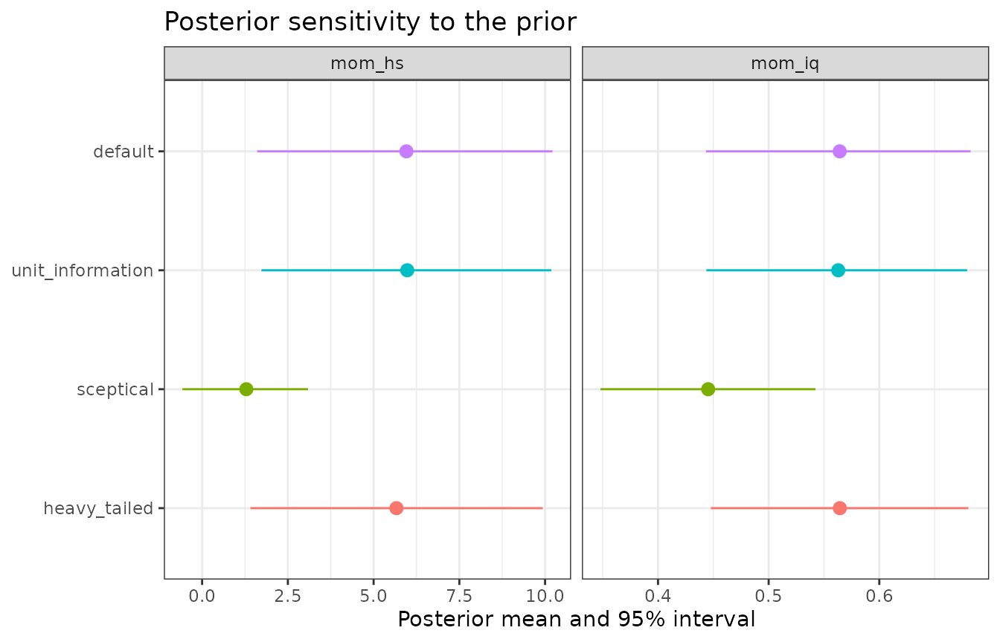

Prior sensitivity: power-scaling diagnostics and refitting
Source:vignettes/articles/prior-sensitivity.Rmd
prior-sensitivity.RmdEvery Bayesian analysis should ask how much did the prior matter? bmbeR offers two complementary answers:
-
prior_sensitivity(): local diagnostics computed from a single fit, with no refitting, by power-scaling the prior and the likelihood (Kallioinen et al., 2023). -
sensitivity_analysis(): a global check that refits the model under alternative priors and compares posteriors and predictive performance.
Power-scaling
Power-scaling raises the prior (or the likelihood) to a power :
strengthens the prior, weakens it. If the posterior barely changes as moves away from 1, the prior is not driving the results.
Local sensitivity is a posterior covariance
Differentiating a posterior expectation with respect to at gives a posterior covariance (Giordano et al., 2018):
So the sensitivities can be computed exactly (up to Monte Carlo error) from the posterior draws you already have. bmbeR reports, for each parameter:
-
prior_mean_sens: the change in the posterior mean, in posterior SDs, per unit of ; -
prior_sd_sens: the relative change in the posterior SD; -
lik_mean_sens,lik_sd_sens: the same with the log-likelihood.
What the numbers mean
In a normal model with prior and likelihood , let be the share of posterior precision contributed by the prior. Then
| Quantity | Normal-model value | Interpretation |
|---|---|---|
prior_sd_sens |
prior’s share of the posterior precision (halved) | |
lik_sd_sens |
data’s share of the posterior precision (halved) | |
prior_mean_sens |
how hard the prior pulls the mean | |
lik_mean_sens |
prior_mean_sens
|
mirror image; no separate information |
conflict_z |
prior-data conflict (Box, 1980) | |
contraction |
how much the data updated the prior (Schad et al., 2021) |
conflict_z is computed as
prior_mean_sens / (2 * sqrt(prior_sd_sens * lik_sd_sens)),
which is exactly the classic prior predictive z-score in the normal
case. That separates a prior that is informative but compatible
with the data from one that conflicts with them, which a single
sensitivity number cannot do.
Diagnoses
| Diagnosis | Condition | What to do |
|---|---|---|
- |
prior influence < threshold
|
Nothing: the data dominate. |
weak likelihood |
prior influential, |lik_sd_sens| <
threshold
|
The data say little about this parameter; the prior must be defensible, or collect more data. |
prior-data conflict |
prior influential, likelihood informative, |conflict_z|
≥ 2 |
Prior and data disagree: revisit the prior (or the model), or use heavier tails. |
informative prior |
prior influential, likelihood informative, |conflict_z|
< 2 |
Fine if the prior is justified; report it. |
The default threshold = 0.05 corresponds to the prior
contributing about 10% of the posterior precision in the normal
model.
Four scenarios
We fit kid_score ~ mom_iq under four priors for the
slope and examine only the slope’s prior
(scale_priors = "mom_iq"):
set.seed(5)
few <- kidiq[sample(nrow(kidiq), 8), ]
scenarios <- list(
"weakly informative (default)" = list(kidiq, NULL),
"informative, agrees" = list(kidiq, prior_config(slope = prior_spec("normal", 0.6, 0.06))),
"informative, conflicts" = list(kidiq, prior_config(slope = prior_spec("normal", 1.2, 0.05))),
"informative, 8 observations" = list(few, prior_config(slope = prior_spec("normal", 0.6, 0.05)))
)
fits <- lapply(scenarios, function(s)
fit_model_with_prior(s[[1]], kid_score ~ mom_iq, prior_config = s[[2]], refresh = 0))
tab <- do.call(rbind, lapply(names(fits), function(nm) {
s <- prior_sensitivity(fits[[nm]], pars = "mom_iq", scale_priors = "mom_iq")$summary
data.frame(scenario = nm, s[, -1])
}))
rownames(tab) <- NULL
num <- vapply(tab, is.numeric, logical(1))
tab[num] <- lapply(tab[num], round, 3)
tab
#> scenario mean sd contraction prior_mean_sens
#> 1 weakly informative (default) 0.610 0.058 1.000 -0.003
#> 2 informative, agrees 0.606 0.042 0.508 -0.061
#> 3 informative, conflicts 0.962 0.040 0.367 3.781
#> 4 informative, 8 observations 0.607 0.049 0.037 -0.118
#> prior_sd_sens lik_mean_sens lik_sd_sens conflict_z diagnosis
#> 1 0.000 -0.008 -0.490 -0.275 -
#> 2 -0.222 0.040 -0.236 -0.134 informative prior
#> 3 -0.276 -3.785 -0.180 8.488 prior-data conflict
#> 4 -0.471 0.146 -0.035 -0.463 weak likelihood- With the default prior the data dominate.
- The agreeing informative prior roughly halves the posterior variance
(contraction about 0.5) without moving the mean:
informative prior. - The conflicting prior drags the slope far from the data’s estimate
of about 0.6, and
conflict_zis far beyond 2. - With eight observations the data contribute very little precision,
so the posterior is essentially the prior:
weak likelihood.
The prior-vs-posterior plot of the conflicting case shows the posterior wedged between the prior and the likelihood:
plot_prior_posterior(fits[["informative, conflicts"]], pars = "mom_iq")
Finite perturbations and their reliability
The derivative describes infinitesimal changes.
prior_sensitivity() also estimates the posterior under
finite powers (by default
and
)
by Pareto-smoothed importance sampling (Vehtari et al., 2024), and flags
estimates whose Pareto
is too high to trust:
ps <- prior_sensitivity(fits[["informative, conflicts"]])
ps
#> <bmb_prior_sensitivity> power-scaling diagnostics (4000 draws, threshold 0.05)
#> variable mean sd contraction prior_mean_sens prior_sd_sens
#> (Intercept) 86.793 0.934 1.000 -0.003 0.050
#> mom_iq 0.962 0.040 0.367 3.774 -0.276
#> sigma 19.041 0.671 0.999 0.723 0.025
#> lik_mean_sens lik_sd_sens conflict_z diagnosis
#> -0.008 -0.553 -0.010 -
#> -3.785 -0.180 8.465 prior-data conflict
#> -0.858 -0.487 3.255 prior-data conflict
#>
#> Flagged parameters:
#> mom_iq prior-data conflict
#> sigma prior-data conflict
#>
#> Finite perturbations: posterior mean shift, in posterior SDs, when the prior or
#> likelihood is raised to the power alpha (* = unreliable importance sampling;
#> refit with sensitivity_analysis() instead):
#> prior a=0.8 prior a=1.25 lik a=0.8 lik a=1.25
#> (Intercept) -0.00 +0.01 +0.02 +0.01
#> mom_iq -0.84 +0.82 +0.79 -0.86
#> sigma -0.15 +0.16 +0.17 -0.19
#> Intercept diagnostics refer to the intercept at the predictor means.
plot(ps)
Weakening
()
is the harder direction for importance sampling. For large
perturbations, refit with sensitivity_analysis()
instead.
Joint versus selective power-scaling
By default the joint prior of all parameters is
power-scaled, so a conflict in one prior can surface in other
parameters. In the output above, sigma is flagged as well
as mom_iq: the misplaced slope leaves systematic misfit
that a larger residual SD absorbs. To locate the source, scale one prior
at a time:
for (p in c("(Intercept)", "mom_iq", "sigma")) {
d <- prior_sensitivity(fits[["informative, conflicts"]], scale_priors = p)$summary
cat(sprintf("scaling the %-12s prior -> %s\n", p,
paste(sprintf("%s: %s", d$variable, d$diagnosis), collapse = "; ")))
}
#> scaling the (Intercept) prior -> (Intercept): -; mom_iq: -; sigma: -
#> scaling the mom_iq prior -> (Intercept): informative prior; mom_iq: prior-data conflict; sigma: prior-data conflict
#> scaling the sigma prior -> (Intercept): -; mom_iq: -; sigma: -Only scaling the mom_iq prior produces the conflict.
Refitting under alternative priors
Local diagnostics describe the posterior you obtained. A global check refits the model under a set of plausible alternative priors:
sens <- sensitivity_analysis(
kidiq, kid_score ~ mom_iq + mom_hs,
prior_configurations = list(
default = NULL,
unit_information = empirical_bayes_priors(kidiq, kid_score ~ mom_iq + mom_hs),
sceptical = prior_config(slope = prior_spec("normal", 0, c(0.1, 1))),
heavy_tailed = prior_config(slope = prior_spec("student_t", 0, c(1, 10), df = 3))
),
refresh = 0
)
#> Fitting configuration 1/4: 'default'
#> Fitting configuration 2/4: 'unit_information'
#> Fitting configuration 3/4: 'sceptical'
#> Fitting configuration 4/4: 'heavy_tailed'
sens
#> <bmb_sensitivity> 4 prior configurations (reference: 'default')
#>
#> Posterior means by configuration (shift in reference posterior SDs):
#> default unit_information sceptical heavy_tailed
#> (Intercept) 25.7 25.8 (+0.02) 41.2 (+2.62!) 25.9 (+0.04)
#> mom_iq 0.564 0.563 (-0.02) 0.445 (-1.96!) 0.564 (+0.00)
#> mom_hs 5.96 5.98 (+0.01) 1.29 (-2.10!) 5.67 (-0.13)
#> sigma 18.2 18.2 (+0.01) 18.4 (+0.34) 18.2 (+0.01)
#> ! = shift of at least 0.5 posterior SDs
#>
#> Predictive comparison (PSIS-LOO; differences relative to the best):
#> elpd_diff se_diff elpd_loo p_loo
#> heavy_tailed 0.0 0.0 -1875.9 3.9
#> unit_information 0.0 0.2 -1876.0 3.9
#> default 0.0 0.1 -1876.0 4.0
#> sceptical -4.6 3.3 -1880.6 2.8
#> |elpd_diff| smaller than ~2 se_diff is not a meaningful difference.
plot(sens, pars = c("mom_iq", "mom_hs"))
The table reports each configuration’s posterior means with the shift
from the reference configuration in reference posterior SDs (shifts of
at least shift_threshold = 0.5 are marked !).
The LOO comparison shows whether the priors also change out-of-sample
predictive performance; differences smaller than about two standard
errors are not meaningful (Vehtari et al., 2017).
Read both parts. Here the sceptical prior moves the two slopes by 2.0 and 2.1 posterior SDs, a material change in the estimates, while its LOO difference of -4.6 (SE 3.3) is too small to distinguish it from the others. A prior can change an estimate substantially while barely changing predictions.
Relation to priorsense
The priorsense
package implements power-scaling sensitivity analysis (Kallioinen et
al., 2023) for brms, cmdstanr, rstan, JAGS and NIMBLE models, and for
draws with user-supplied log-prior and log-likelihood values. It
measures sensitivity with the cumulative Jensen–Shannon distance.
rstanarm fits do not store log-prior evaluations, so bmbeR reconstructs
them from rstanarm::prior_summary() (including autoscaling
and the centred intercept). It reports the mean and SD sensitivities,
whose normal-model interpretations are given above, and the
conflict_z statistic. The two approaches answer the same
question and should agree on which parameters are sensitive, though
their numerical scales differ.
References
Box, G. E. P. (1980). Sampling and Bayes’ inference in scientific modelling and robustness. JRSS A, 143(4), 383–430.
Giordano, R., Broderick, T., & Jordan, M. I. (2018). Covariances, robustness, and variational Bayes. JMLR, 19(51), 1–49.
Kallioinen, N., Paananen, T., Bürkner, P.-C., & Vehtari, A. (2023). Detecting and diagnosing prior and likelihood sensitivity with power-scaling. Statistics and Computing, 34, 57.
Schad, D. J., Betancourt, M., & Vasishth, S. (2021). Toward a principled Bayesian workflow in cognitive science. Psychological Methods, 26(1), 103–126.
Vehtari, A., Gelman, A., & Gabry, J. (2017). Practical Bayesian model evaluation using leave-one-out cross-validation and WAIC. Statistics and Computing, 27(5), 1413–1432.
Vehtari, A., Simpson, D., Gelman, A., Yao, Y., & Gabry, J. (2024). Pareto smoothed importance sampling. JMLR, 25(72), 1–58.